Final Project Presentation
Biostat 696
Kunxi Li, Haolin Li, Jiayuan Xiao
Motivation
Light Pollution
Winter night in Kunming, Yunan, China, Jan 16, 2023
Motivation
Magnitude of Celestial Body
- Range \([-26.73, 30]\)
- Sun -26.73
- Full moon -12.6
- Faintest stars observable with naked eye +6
Naked Eye Limiting Magnitude (
NELM)Magnitude Per Square Arcsecond (
MPSAS) \[ NELM = \text{some complex function}(MPSAS) \]- Range \([16 (brightest) - 22 (darkest)]\)
- Measured by equipment (Sky Quality Meter)
Data Source
Globe at Night Project (Link)
- Light pollution report at
29404locations (2020) - Sky brightness measurement (
MPSAS) at2030locations- Around
800inside continental US
- Around
- Darker means higher
NELM(less light pollution)
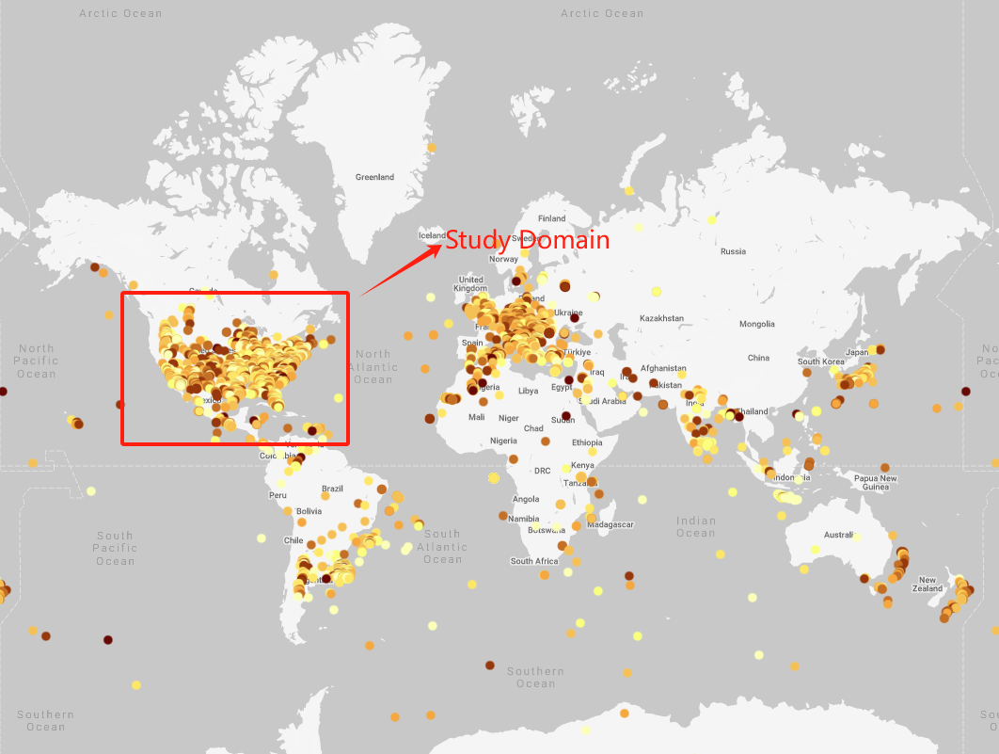
NELM at All Report Locations in 2020Data Source
Explanatory Variables
- Population Density1
- Land Price2
- Electricity Consumption3
All are raster datasets and are sampled at the same locations as MPSAS measurements.
Our Goal
- Apply different spatial Bayesian models and compare performance;
- Impute missing or damaged data in the original dataset (due to unofficial reports);
- Predict light pollution in Michigan.
Our Model
\[ y(s) = \beta^Tx(s) + w(s) + \epsilon(s), s\in D \]
Response Variable: \[ y(s) \]
MPSASmeasurement at location \(s\) (Univariate)
Explanatory Variables \[ x(s) = [x_1(s), x_2(s), x_3(s), x_4(s)]^T \]
- \(x_1\): Elevation
- \(x_2\): Population Density
- \(x_3\): Land Price
- \(x_4\): Electricity Consumption
Model Assumptions - GP
\(w(s) \sim GP(0, \tau^2C(\cdot,\cdot))\)
Features
Rapid decay in covariance
Stationary, isotropic (?)
Exponential kernel \[ C(s, s') = \sigma^2 \exp{-\phi||s - s'||} \]
- For simplicity
- Interpretability
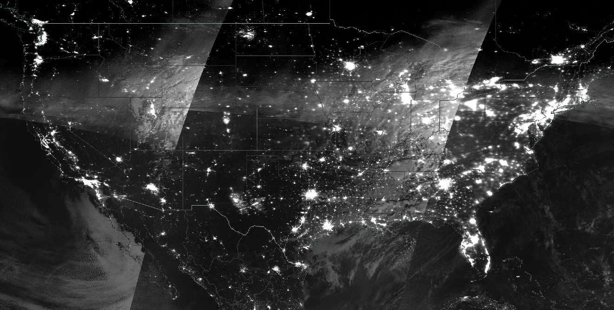
Why not use night time light data as an explanatory variable?
- Only measuring differences
- Does not explain anything
Model Assumptions - Priors
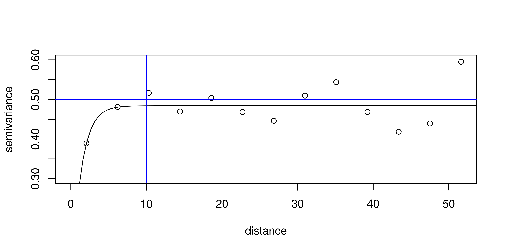
The residual plot of semivariance from nonspatial model could help with our decision of the prior and starting value settings (Banerjee, Carlin, and Gelfand (2014))
- \(\beta \sim N(0, 1000I_p)\)
- We assume independence between explanatory variables
Model Assumptions - Priors
- \(\phi \sim U(3/20, 3/0.1)\)
Since we plan to use exponential model to specify the covariance function, where the spatial correlation is given by
\[p(d)=exp(-d/\phi)\] we define the distance, \(d_0\) , at which this correlation drops to 0.05 as the “effective spatial range” ,then \[ \phi = log(0.5)/d_0\approx 3/d_0 \]
We assume large decay factor
Starting value: 3/10, since the range of the semi-variogram is close to 10
Model Assumptions - Priors
- \(\sigma^2 \sim Inv.G(2, 2)\)
- Chose because the sill value of residuals plot is close to 0.5
- Starting value: same as 0.5
- \(\tau^2 \sim Inv.G(2, 0.1)\)
- Chose because we think the mean value of \(\tau^2\) should be a small number
- Starting value 0.1, since the nugget value of the plot is close to 0.
- Tuning: \(\phi=0.05, \tau^2=0.01, \sigma^2=0.01\)
MCMC Trace - Full GP
MCMC samples: 50, 000
Acceptance rate: 51.7%
Running time: 157.3s
Convergence: \(\sigma^2\) and \(\tau^2\) seem to reach convergence, since their trace plot don’t have many flat areas, and the density distribution appear to be unimodal and symmetric, indicating precise estimation
Convergence: trace plot of \(\phi\) tend to have a skewed distribution that does not look ideal and there are a lot of flat sections in its trace plot as well.
Empirical mean, standard deviation and standard error
| Mean | SD | Naive SE | Time-series SE | |
|---|---|---|---|---|
| \(\sigma^2\) | 0.4683 | 0.05980 | 2.674e-04 | 0.0010711 |
| \(\tau^2\) | 0.1730 | 0.01491 | 6.668e-05 | 0.0002933 |
| \(\phi\) | 22.4706 | 5.42120 | 2.424e-02 | 0.3252332 |
Quantiles for each variable
| 2.5% | 25% | 50% | 75% | 97.5% | |
|---|---|---|---|---|---|
| \(\sigma^2\) | 0.3611 | 0.4258 | 0.4648 | 0.5058 | 0.5928 |
| \(\tau^2\) | 0.1459 | 0.1626 | 0.1724 | 0.1824 | 0.2040 |
| \(\phi\) | 10.6424 | 18.8733 | 23.2973 | 26.9326 | 29.8832 |
MCMC Trace - Full GP
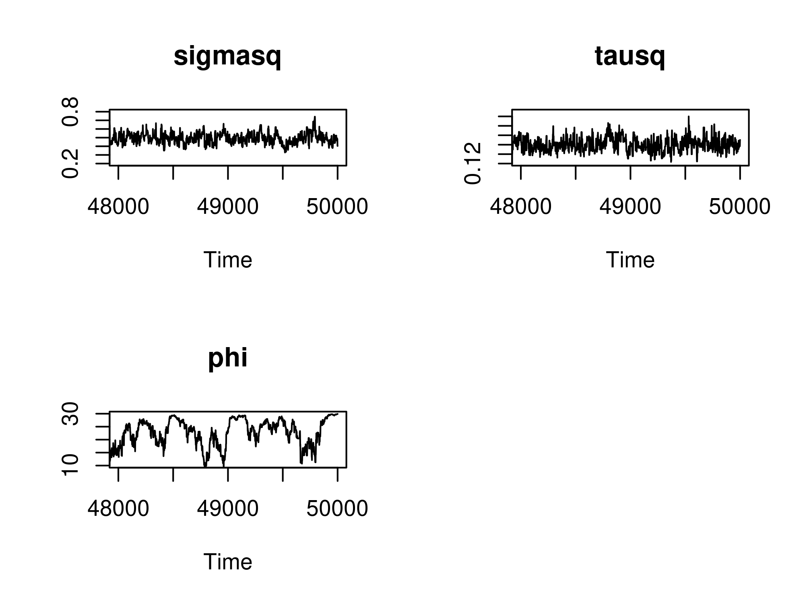
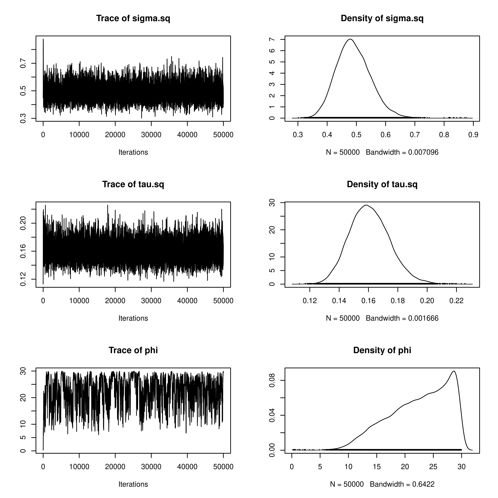
MCMC Trace - Low Rank GP
- MCMC samples: 50, 000
- Acceptance rate: 7.71%
- knots grid: \(6\times6\)
- Running time: 29.8s
- Convergence: Like the fullGP model, the trace plot and density plot of \(\sigma^2\) and \(\tau^2\) suggest convergence, but may not as good as fullGP model since there are more fluctuation in the plots
- The density plot of \(\phi\) is still skewed distributed, but according to the trace plot the convergence performance is better than fullGP model.
Empirical mean, standard deviation and standard error
| Mean | SD | Naive SE | Time-series SE | |
|---|---|---|---|---|
| \(\sigma^2\) | 0.2024 | 0.05776 | 0.0002583 | 0.002145 |
| \(\tau^2\) | 0.3579 | 0.05400 | 0.0002415 | 0.002185 |
| \(\phi\) | 0.2537 | 0.07618 | 0.0003407 | 0.003548 |
Quantiles for each variable
| 2.5% | 25% | 50% | 75% | 97.5% | |
|---|---|---|---|---|---|
| \(\sigma^2\) | 0.1067 | 0.1608 | 0.1968 | 0.2381 | 0.3300 |
| \(\tau^2\) | 0.2444 | 0.3236 | 0.3608 | 0.3959 | 0.4547 |
| \(\phi\) | 0.1533 | 0.1917 | 0.2422 | 0.3010 | 0.4288 |
MCMC Trace - Low Rank GP
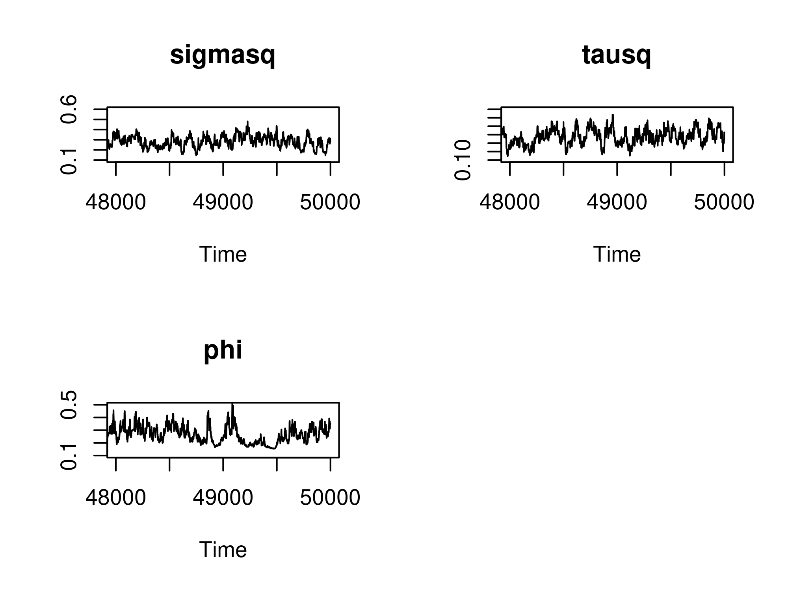
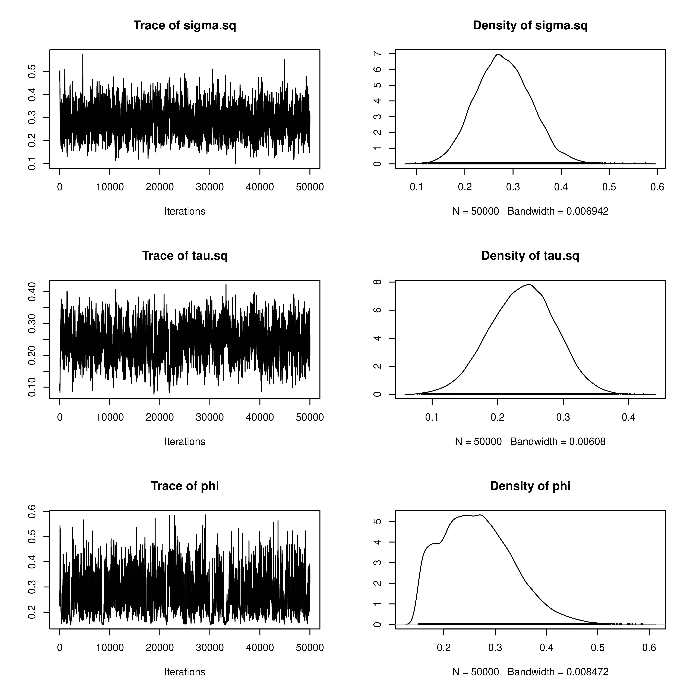
MCMC Trace - Nearest Neighbour GP
We explored the trace plot of NNGP model but found that the previous prior settings did not fit to the NNGP latent and response model.
We changed the priors here as
\(\beta \sim N(0, 1000I_p)\)
\(\phi \sim U(15, 60)\)
- Starting value: 30
\(\sigma^2 \sim Inv.G(2, 0.5)\)
- Starting value: 1
\(\tau^2 \sim Inv.G(2, 0.5)\)
- Starting value: 0.5
Turning: \(\phi=2, \tau^2=0.2, \sigma^2=0.2\);
Nearest Neighbor: 10
MCMC Trace - Nearest Neighbour GP
Acceptance Rate: 17.92%
Running time: 92.4s
MCMC Results for Both Intent and Response NNGP Models
The trace plot of \(\sigma^2, \tau^2\) show convergence
The trace plot of \(\phi\) does not settle around a particular value and instead shows considerable movement across a wide range of values, indicating convergence of \(\phi\) here is not ideal.
Empirical mean, standard deviation and standard error
| Mean | SD | Naive SE | Time-series SE | |
|---|---|---|---|---|
| \(\sigma^2\) | 0.5908 | 0.06990 | 3.126e-04 | 0.001117 |
| \(\tau^2\) | 0.1614 | 0.01485 | 6.639e-05 | 0.000346 |
| \(\phi\) | 30.4587 | 9.31411 | 4.165e-02 | 0.532808 |
Quantiles for each variable
| 2.5% | 25% | 50% | 75% | 97.5% | |
|---|---|---|---|---|---|
| \(\sigma^2\) | 0.4650 | 0.5425 | 0.5869 | 0.6347 | 0.7395 |
| \(\tau^2\) | 0.1352 | 0.1511 | 0.1605 | 0.1707 | 0.1918 |
| \(\phi\) | 16.6526 | 23.2558 | 29.1885 | 36.2258 | 52.5989 |
MCMC Trace - Nearest Neighbour GP
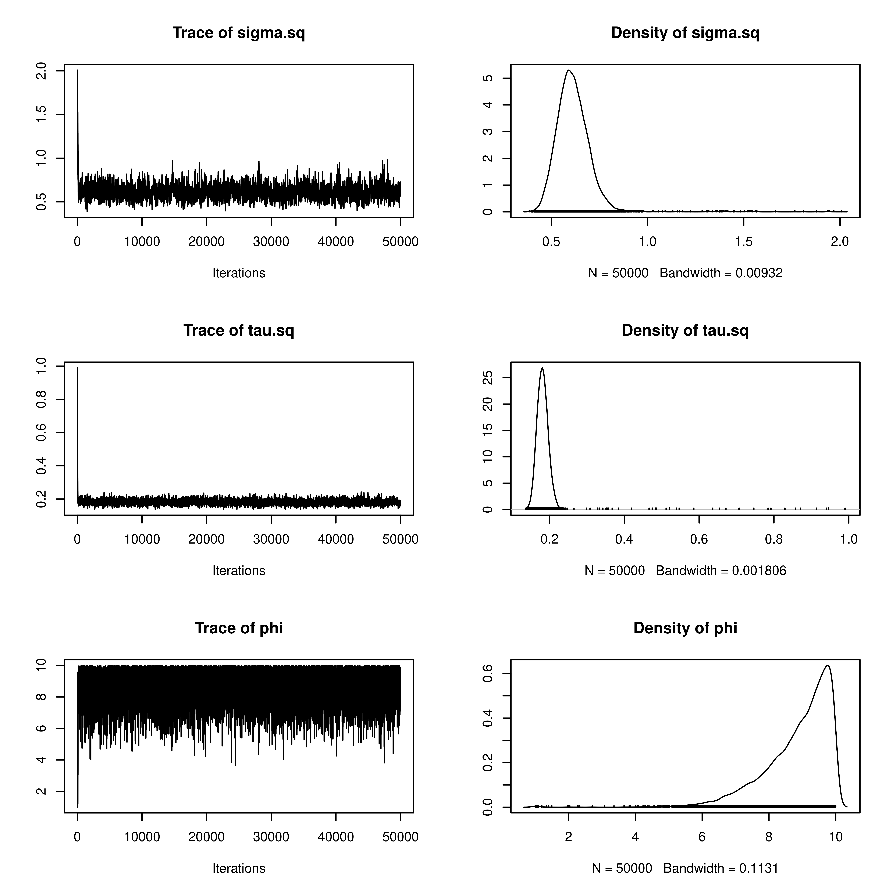
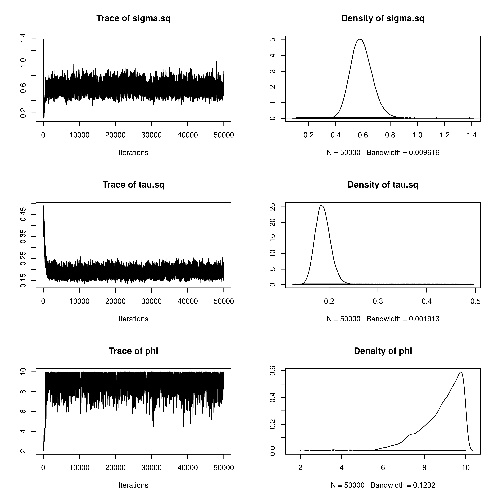
MCMC Diagnoses - Full GP
Gelman Dignostic:
- We changed the starting values and ran MCMC for each model for 3 times to gain the plot of shrink factor that considers within-chain variance and between-chain variance.
- In fullGP model, given multiple runs, the shrink factors of \(\sigma^2\) and \(\phi\) are quickly drop to 1, that show good convergence, while \(\tau^2\) ’s plot drops a bit slowly.
- Multivariate PSRF(Potential Scale Reduction Factor): 1 (Indicates convergence as well)
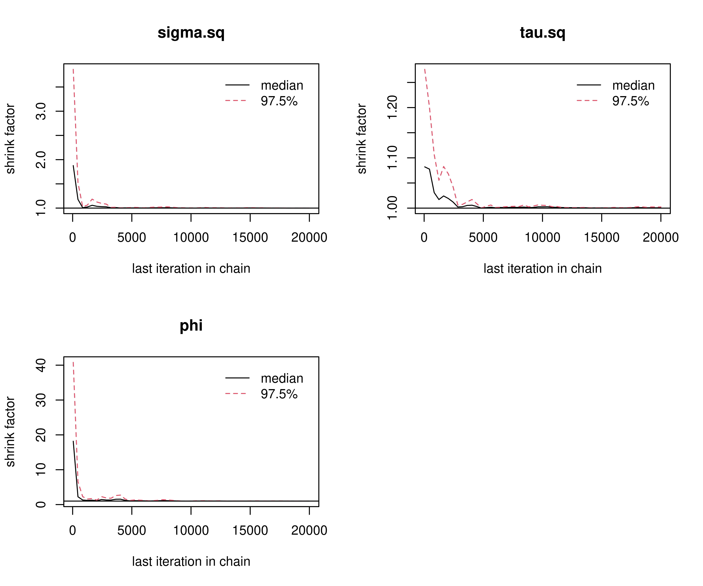
MCMC Diagnoses - LRGP
Gelman Dignostic
- Lack of convergence according to the fluctuation of the plots of all the parameters
- Multivariate PSRF: 1.03
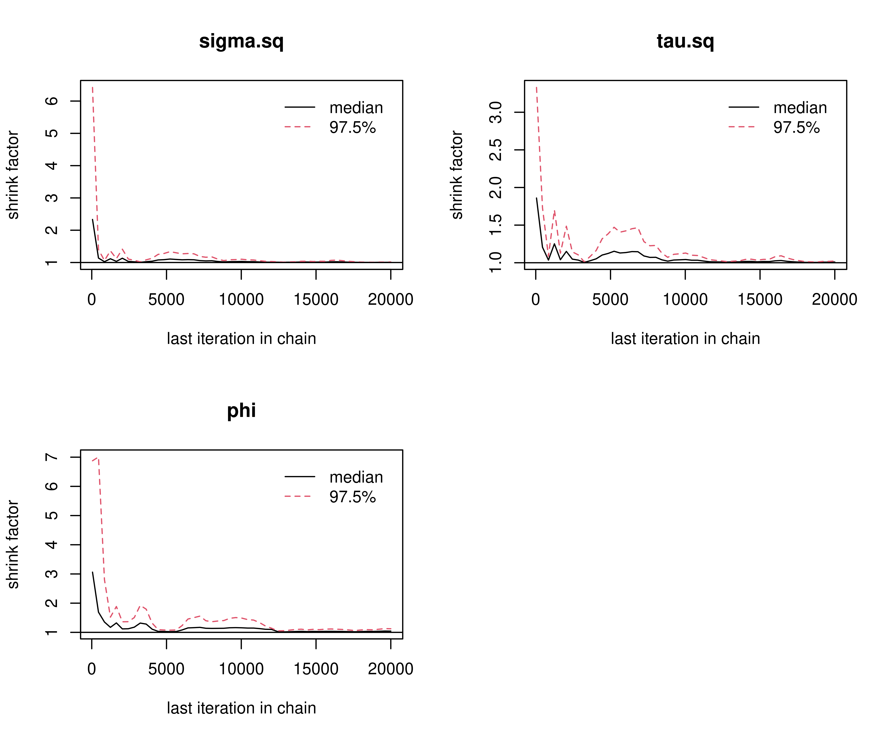
MCMC Diagnoses - NNGP
Gelman Dignostic
- All the plots are dropped quickly to 1 -> Convergence
- \(\sigma^2\) and \(\tau^2\) show peaks at the start of their PSRF plots
- Multivariate PSRF: 1
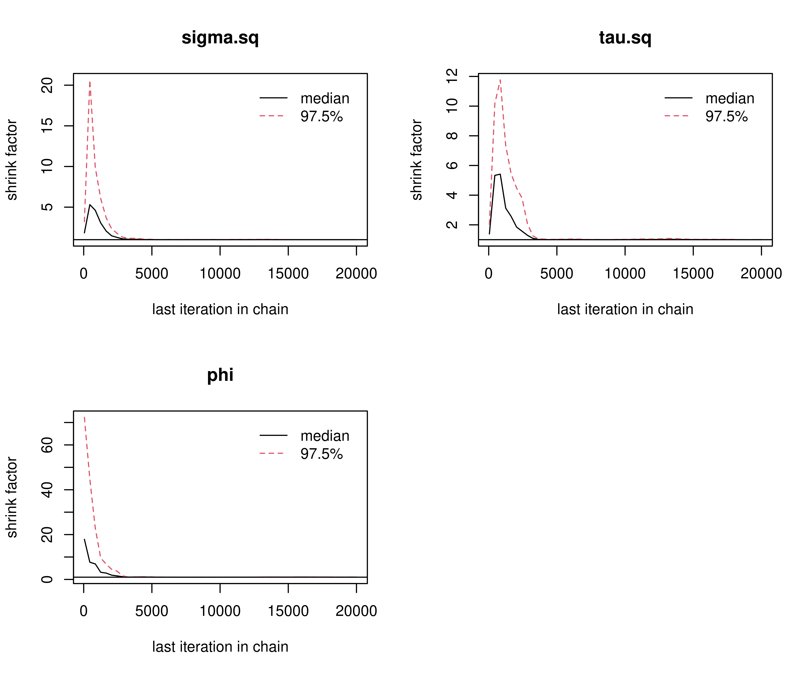
MCMC Diagnoses - Summary
| Full GP | LRGP | NNGP (latent) |
NNGP (Response) |
|
|---|---|---|---|---|
| $DIC | ||||
| bar.D | -532.3148 | 179.1369 | - | - |
| D.bar.Omega | -775.2592 | 164.0365 | - | - |
| pD | 242.9444 | 15.1004 | 245.9763 | - |
| DIC | -289.3703 | 194.2373 | 880.0929 | - |
| L | - | - | -194.0702 | - |
| $GP | ||||
| G | 61.08594 | 293.8502 | 61.19716 | 340.3536 |
| P | 138.35194 | 323.2817 | 141.61156 | 479.2075 |
| D | 199.43788 | 617.1320 | 202.80872 | 819.5612 |
| $GRS | 663.4488 | -156.3317 | 653.3704 | -272.9311 |
MCMC Diagnoses - Summary
| Effective Sample Size | Full GP | LRGP | NNGP (latent) |
NNGP (Response) |
|---|---|---|---|---|
| \(\sigma^2\) | 3445.5804 | 725.3773 | 3912.5011 | 3444.001 |
| \(\tau^2\) | 2586.3832 | 610.8421 | 1840.5902 | 3590.207 |
| \(\phi\) | 293.4634 | 461.0998 | 305.5915 | 2941.707 |
Validation - Full GP
- Testing set: 25% of the data
- Most of the points are close to reference line (\(slope=1\) )
- Low confidence intervals among all the models
- Nearly no spatial dependence on the semivariogram
- Low residual values (close to 0.1)
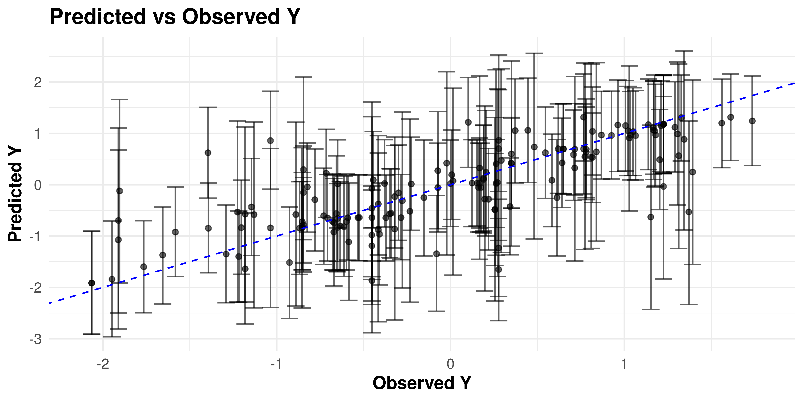
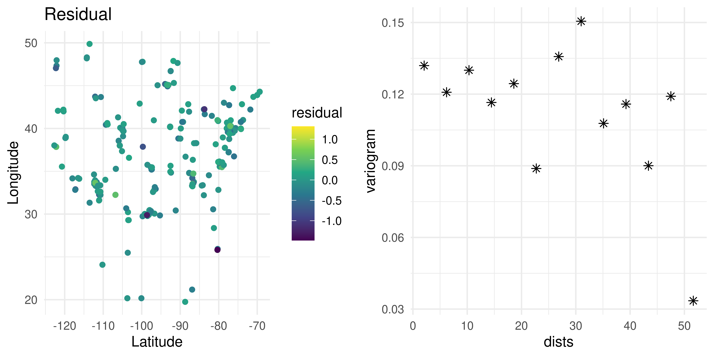
Validation - Low Rank GP
- More deviation points from reference line comparing to full rank GP model
- Higher confidence intervals than full GP model
- Less spatial dependence than LM model
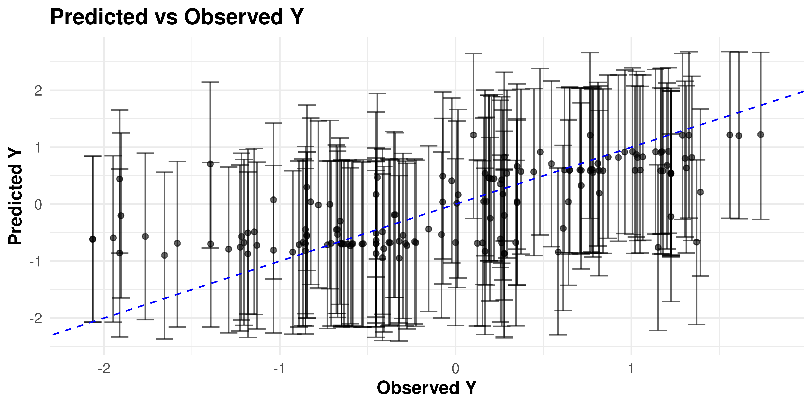

Validation - NNGP
- According to residuals, latent model is significantly better than response model, the latter one seems failing to capture spatial variance that still can notice in the semivariogram.
- In terms of the distribution of residuals, the two models tend to have similar spatial patterns that points with larger residuals are both gathered around the eastern part of the research region.
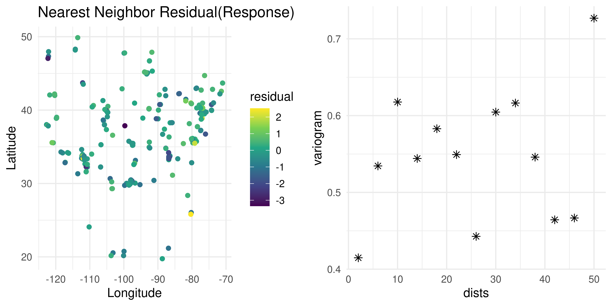
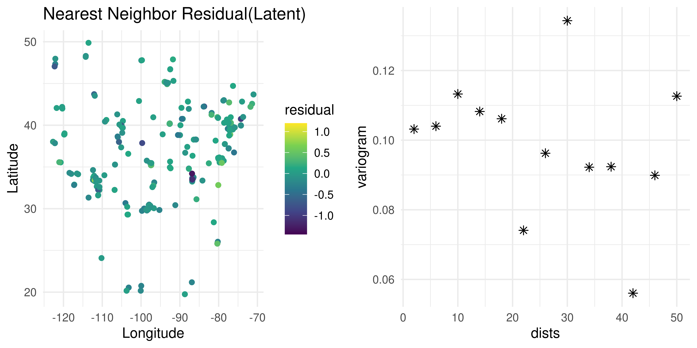
Validation - NNGP
- Comparing two models’ prediction on validation data, the scatters from latent model are closer to the reference line and has narrower confidence intervals generally.
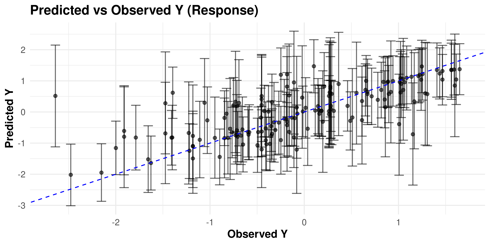
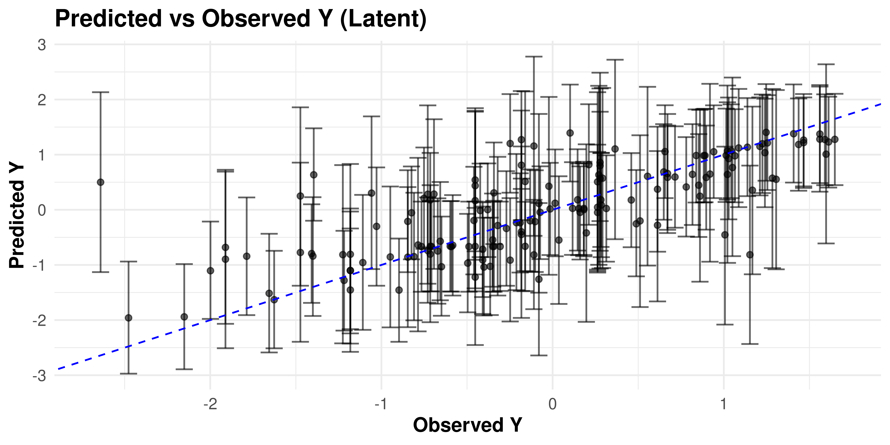
Prediction

Further Attempts: Non-stationary Model1
Model Description
- \(Y = X + \epsilon\) where \(\epsilon \sim N(0, \sigma^2)\)
- \(X \sim MVN(\mu 1 + B\phi, diag[(p\exp[B\psi])^2])\)
- \(\phi \sim MVN(0, \Sigma_{\phi}\))
- \(\Sigma_{\phi} = (\tau_{\phi}^2[D_{\phi}-\alpha_{\phi}W_{\phi}]^{-1})\)
Priors
- \(\alpha_{\phi} \sim Beta(p_1,p_2)\)
- \(\tau_{\phi}^2 \sim Gamma(q_1,q_2)\)
- \(\rho \sim \text{Truncated Cauchy}(0, s)\)
Further Attempts: Non-stationary Model
Fitting Results
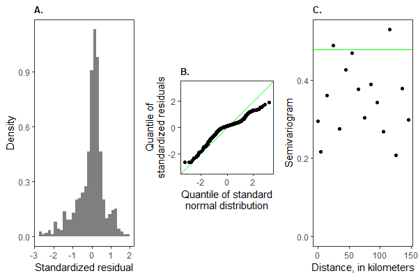
Charts of Residuals
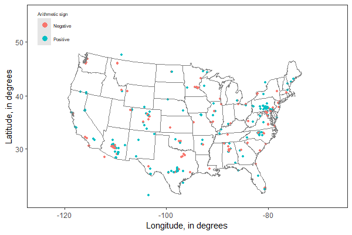
Signs of Residuals on Each Location
Further Attempts: Non-stationary Model
Prediction results
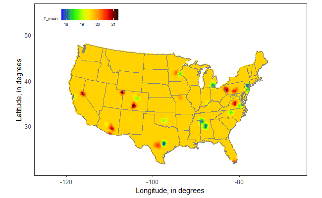
Non-Stationary Model Prediction: Mean
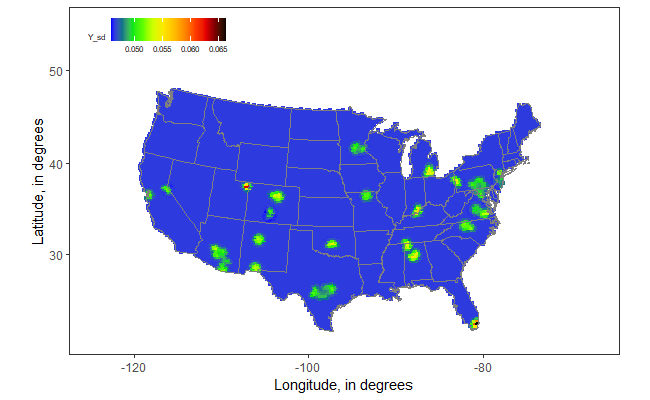
Non-Stationary Model Prediction: Standard Deviation
Discussion and Improvements
Scale
Cloud cover
Static
Response model vs Latent model
Response model’s performance on our dataset is not as good as latent model, which is probably caused by the setting of the priors since response model’s nugget term is within the covariance, may consider adjust the prior of NNGP model more meticulously.
Thank You!
Map Mad Scientists